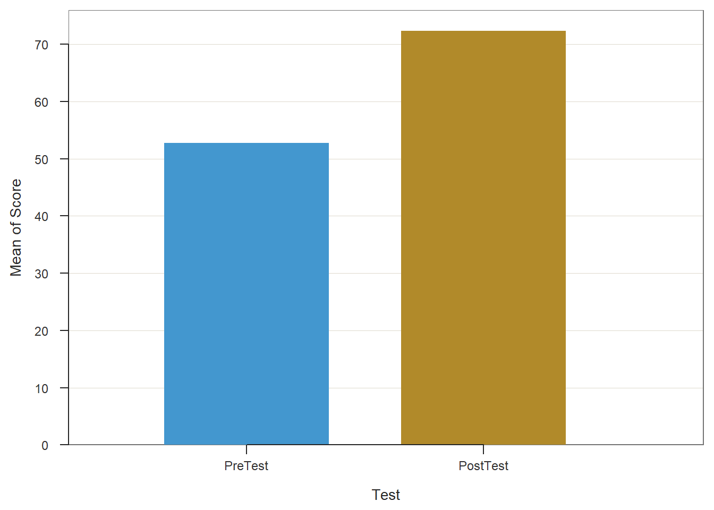
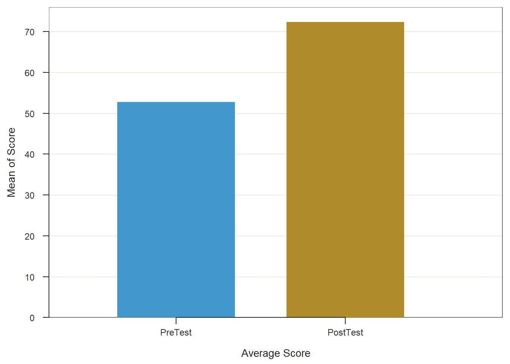

Chapter 30 Evaluating a Post-Test-Only with Control Group Design Using Independent-Samples t-test
In a post-test-only with control group training evaluation design (i.e., research design), employees are assigned (randomly or non-randomly) to either a treatment group (e.g., new training program) or a control group (e.g., comparison group, old training program), and every participating employee is assessed on selected training outcomes (i.e., measures) after the training has concluded. If random assignment to groups is used, then a post-test-only with control group design is considered experimental. Conversely, if non-random assignment to groups is used, then the design is considered quasi-experimental. Regardless of whether random or non-random assignment is used, an independent-samples t-test can be used to analyze the data from a post-test-only with control group design, provided key statistical assumptions are satisfied.
Like any evaluation design, there are limitations to the inferences and conclusions we can draw from a post-test-only with control group design. As a major strength, this design includes a control group, and if coupled with random assignment to groups, then the design qualifies as a true experimental design. With that being said, if we use non-random assignment to the treatment and control groups, then we are less likely to have equivalent groups of individuals who enter each group, which may bias how they engage in the demands of their respective group and how they complete the outcome measures. Further, because this design lacks a pre-test (i.e., assessment of initial performance on the outcome measures), we cannot be confident that employees in the treatment and control groups started in the same place with respect to the outcome(s) we might measure at post-test. Consequently, any differences we observe between the two groups on a post-test outcome measure may reflect pre-existing differences meaning, the training may not have caused the differences that are apparent at post-test.
30.1 Review of Independent-Samples t-test
The independent-samples t-test is an inferential statistical analysis that can be used to compare the to compare the means of two independent groups, such as a treatment and control group. That is, this analysis compares differences in means when we have two separate groups of cases drawn from two populations; critically, each case must appear in only one of the two samples, hence the name independent-samples t-test. In the context of a post-test-only training evaluation design, we can conceptualize group membership (e.g., treatment vs.control) as a categorical (nominal, ordinal) predictor variable with just two categories (i.e., levels), and the post-test outcome measure as a continuous (interval, ratio) outcome variable. Importantly, the outcome variable must be continuous for an independent-samples t-test to be an appropriate analysis. The independent-samples t-test is sometimes called a between-subjects t-test or a two-groups t-test.
The formula for an independent-samples t-test can be written as follows:
\(t = \frac{\overline{X}_1 - \overline{X}_2}{s_{{X}_{1}{X}_2} \sqrt{\frac{2}{n}}}\)
where \(X_{1}\) is the mean of the first group and \(X_{2}\) is the mean of the second group, \(s_{{X}_{1}{X}_2}\) is the pooled standard deviation of \(X_{1}\) and \(X_{2}\), and \(n\) refers to the number of cases (i.e., sample size).
30.1.1 Statistical Assumptions
The statistical assumptions that should be met prior to running and/or interpreting estimates from an independent-samples t-test include:
- The outcome (dependent, response) variable has a univariate normal distribution in each of the two underlying populations (e.g., samples, groups, conditions), which correspond to the two categories (levels) of the predictor (independent, explanatory) variable;
- The variances of the outcome (dependent, response) variable are equal across the two populations (e.g., samples, groups, conditions), which is often called the equality of variances or homogeneity of variances assumption.
30.1.2 Statistical Significance
If we wish to know whether the two means we are comparing differ to a statistically significant extent, we can compare our t-value value to a table of critical values of a t-distribution. If our calculated value is larger than the critical value given the number of degrees of freedom (df = n - 2) and the desired alpha level (i.e., significance level, p-value threshold), we would conclude that there is evidence of a significant difference in means between the two independent samples. Alternatively, we can calculate the exact p-value if we know the t-value and the degrees of freedom. Fortunately, modern statistical software calculates the t-value, degrees of freedom, and p-value for us.
Using null hypothesis significance testing (NHST), we interpret a p-value that is less than .05 (or whatever two- or one-tailed alpha level we set) to meet the standard for statistical significance, meaning that we reject the null hypothesis that the difference between the two means is equal to zero. In other words, if the p-value is less than .05, we conclude that the two means differ from each other to a statistically significant extent. In contrast, if the p-value is equal to or greater than .05, then we fail to reject the null hypothesis that the difference between the two means is equal to zero. Put differently, if the p-value is equal to or greater than .05, we conclude that the two means do not differ from zero to a statistically significant extent, leading us to conclude that there is no difference between the two means in the population.
When setting an alpha threshold, such as the conventional two-tailed .05 level, sometimes the question comes up regarding whether borderline p-values signify significance or nonsignificance. For our purposes, lets be very strict in our application of the chosen alpha level. For example, if we set our alpha level at .05, p = .049 would be considered statistically significant, and p = .050 would be considered statistically nonsignificant.
Because our independent-samples t-test is estimated using data from a sample drawn from an underlying population, sampling error will affect the extent to which our sample is representative of the population from which its drawn. That is, the observed difference between the two means is a point estimate of the population parameter and is subject to sampling error. Fortunately, confidence intervals can give us a better idea of what the true population parameter value might be. If we apply an alpha level of .05 (two-tailed), then the equivalent confidence interval (CI) is a 95% CI. In terms of whether the difference between two means is is statistically significant, if the lower and upper limits of 95% CI do not include zero, then this tells us the same thing as a p-value that is less than .05. Strictly speaking, a 95% CI indicates that if we were to hypothetically draw many more samples from the underlying populations and construct CIs for each of those samples, then the true parameter (i.e., true value of the difference in means in the population) would likely fall within the lower and upper bounds of 95% of the estimated CIs. In other words, the 95% CI gives us an indication of plausible values for the population parameter while taking into consideration sampling error. A wide CI (i.e., large difference between the lower and upper limits) signifies more sampling error, and a narrow CI signifies less sampling error.
30.1.3 Practical Significance
A significant independent-samples t-test and associated p-value only tells us that the two means are statistically different from one another. It does not, however, tell us about the magnitude of the difference between means or in other words, the practical significance. The standardized mean difference score (Cohens d) is an effect size, which means that it is a standardized metric that can be used to compare d-values compare samples. In essence, the Cohens d indicates the magnitude of the difference between means in standard deviation units. A d-value of .00 indicates that there is no difference between the two means, while the following are some generally accepted qualitative-magnitude labels we can attach to the absolute value of d.
| Cohens d | Description |
|---|---|
| .20 | Small |
| .50 | Medium |
| .80 | Large |
Here is the formula for computing d:
\(d = t \sqrt{\frac{n_1 + n_2} {n_1n_2}}\)
where \(t\) refers to the calculated \(t\)-value, \(n_1\) refers to the sample size of the first independent sample, and \(n_2\) refers to the sample size of the second independent sample.
30.1.4 Sample Write-Up
One group of 25 participants completes a new safety training program (treatment group), and a separate group of 25 participants completes the old safety training program (control group). Both groups of participants complete a safety knowledge test one week after completing their respective training programs. In other words, these participants were part of a post-test-only with control group training evaluation design. An independent-samples t-test was used to determine whether the average safety knowledge test score for the group that completed the new training program was significantly different than the average safety knowledge test score for the group that completed the old training program. We found a statistically significant difference between the means on the safety knowledge test for the treatment group that participated in the new training program (M = 72.36, SD = 6.98, n = 25) and the control group that participated in the old training program (M = 61.32, SD = 9.15, n = 25), such that those who participated in the new training program performed better on the safety knowledge test (t = 4.80, p < .01, 95% CI[6.41, 15.67]). Further, because we found a statistically significant difference in means, we then interpreted the practical significance of this effect, which was large (d = 1.36).
30.1.5 Video Tutorial
As usual, you have the choice to follow along with the written tutorial in this chapter or to watch the video tutorial below.
Link to Video Tutorial: https://youtu.be/oATcHuMZtuo
30.1.5.1 Functions & Packages Introduced
| Function | Package |
|---|---|
ttest |
lessR |
BarChart |
lessR |
30.1.5.2 Initial Steps
If you havent already, save the file called TrainingEvaluation_PostControl.csv into a folder that you will subsequently set as your working directory. Your working directory will likely be different than the one shown below (i.e., "H:/RWorkshop"). As a reminder, you can access all of the data files referenced in this book by downloading them as a compressed (zipped) folder from the my GitHub site: https://github.com/davidcaughlin/R-Tutorial-Data-Files; once youve followed the link to GitHub, just click Code (or Download) followed by Download ZIP, which will download all of the data files referenced in this book. For the sake of parsimony, I recommend downloading all of the data files into the same folder on your computer, which will allow you to set that same folder as your working directory for each of the chapters in this book.
Next, using the setwd function, set your working directory to the folder in which you saved the data file for this chapter. Alternatively, you can manually set your working directory folder in your drop-down menus by going to Session > Set Working Directory > Choose Directory. Be sure to create a new R script file (.R) or update an existing R script file so that you can save your script and annotations. If you need refreshers on how to set your working directory and how to create and save an R script, please refer to Setting a Working Directory and Creating & Saving an R Script.
# Set your working directory
setwd("H:/RWorkshop")Next, read in the .csv data file called TrainingEvaluation_PostControl.csv using your choice of read function. In this example, I use the read_csv function from the readr package (Wickham and Hester 2020). If you choose to use the read_csv function, be sure that you have installed and accessed the readr package using the install.packages and library functions. Note: You dont need to install a package every time you wish to access it; in general, I would recommend updating a package installation once ever 1-3 months. For refreshers on installing packages and reading data into R, please refer to Packages and Reading Data into R.
# Install readr package if you haven't already
# [Note: You don't need to install a package every
# time you wish to access it]
install.packages("readr")# Access readr package
library(readr)
# Read data and name data frame (tibble) object
td <- read_csv("TrainingEvaluation_PostControl.csv")##
## -- Column specification --------------------------------------------------------------------------
## cols(
## EmpID = col_double(),
## Condition = col_character(),
## PostTest = col_double()
## )# Print the names of the variables in the data frame (tibble) objects
names(td)## [1] "EmpID" "Condition" "PostTest"# View variable type for each variable in data frame
str(td)## spec_tbl_df[,3] [50 x 3] (S3: spec_tbl_df/tbl_df/tbl/data.frame)
## $ EmpID : num [1:50] 26 27 28 29 30 31 32 33 34 35 ...
## $ Condition: chr [1:50] "New" "New" "New" "New" ...
## $ PostTest : num [1:50] 66 74 62 84 78 73 60 61 71 83 ...
## - attr(*, "spec")=
## .. cols(
## .. EmpID = col_double(),
## .. Condition = col_character(),
## .. PostTest = col_double()
## .. )# View first 6 rows of data frame
head(td)## # A tibble: 6 x 3
## EmpID Condition PostTest
## <dbl> <chr> <dbl>
## 1 26 New 66
## 2 27 New 74
## 3 28 New 62
## 4 29 New 84
## 5 30 New 78
## 6 31 New 73There are 50 cases (i.e., employees) and 3 variables in the td data frame: EmpID (unique identifier for employees), Condition (training condition: New = new training program, Old = old training program), and PostTest (post-training scores on training assessment, ranging from 1-100, where 100 indicates better performance). Regarding participation in the training conditions, 25 employees participated in the old training program, and 25 employees participated in the new training program.
30.2 Estimate Independent-Samples t-test
Different functions are available that will allow us to estimate an independent-samples t-test in R. In this chapter, we will review how to run an independent-samples t-test using the ttest function from the lessR package, as it produces a generous amount of output automatically. Using this function, we will evaluate whether the means on the post-test variable (PostTest) differ based on the two levels of the training Condition variable (New, Old) differ from one another to a statistically significant extent; in other words, lets find out if we should treat the means as being different from one another.
To access and use the ttest function, we need to install and/or access the lessR package. If you havent already, be sure to install the lessR package; if youve recently installed the package, then you likely dont need to install it in this session, and you can skip that step to save time. You will need to run the library function to access the package (assuming its been installed), so dont forget that important step.
# Install lessR package
install.packages("lessR")# Access lessR package and its functions
library(lessR)Please note that when you use the library function to access the lessR package in a new R or RStudio session, you will likely receive a message in red font in your Console. Typically, red font in your Console is not a good sign; however, accessing the lessR package is one of the unique situations in which a red-font message is not a warning or error message. You may also receive a warning message that indicates that certain objects are masked. For our purposes, we can ignore that message.
Now were ready to run an independent-samples t-test. To begin, type the name of the ttest function. As the first argument in the parentheses, specify the statistical model that we wish to estimate. To do so, type the name of the continuous outcome (dependent) variable (PostTest) to the left of the ~ operator and the name of the categorical predictor (independent) variable (Condition) to the right of the ~ operator. For the second argument, use data= to specify the name of the data frame where the outcome and predictor variables are located (td). For the third argument, enter paired=FALSE to inform R that the data are not paired (i.e., you are not requesting a paired-samples t-test).
# Estimate independent-samples t-test
ttest(PostTest ~ Condition, data=td, paired=FALSE)##
## Compare PostTest across Condition levels New and Old
##
## ------ Describe ------
##
## PostTest for Condition New: n.miss = 0, n = 25, mean = 72.360, sd = 6.975
## PostTest for Condition Old: n.miss = 0, n = 25, mean = 61.320, sd = 9.150
##
## Mean Difference of PostTest: 11.040
##
## Weighted Average Standard Deviation: 8.136
##
##
## ------ Assumptions ------
##
## Note: These hypothesis tests can perform poorly, and the
## t-test is typically robust to violations of assumptions.
## Use as heuristic guides instead of interpreting literally.
##
## Null hypothesis, for each group, is a normal distribution of PostTest.
## Group New Shapiro-Wilk normality test: W = 0.950, p-value = 0.253
## Group Old Shapiro-Wilk normality test: W = 0.969, p-value = 0.621
##
## Null hypothesis is equal variances of PostTest, i.e., homogeneous.
## Variance Ratio test: F = 83.727/48.657 = 1.721, df = 24;24, p-value = 0.191
## Levene's test, Brown-Forsythe: t = -0.955, df = 48, p-value = 0.344
##
##
## ------ Infer ------
##
## --- Assume equal population variances of PostTest for each Condition
##
## t-cutoff for 95% range of variation: tcut = 2.011
## Standard Error of Mean Difference: SE = 2.301
##
## Hypothesis Test of 0 Mean Diff: t = 4.798, df = 48, p-value = 0.000
##
## Margin of Error for 95% Confidence Level: 4.627
## 95% Confidence Interval for Mean Difference: 6.413 to 15.667
##
##
## --- Do not assume equal population variances of PostTest for each Condition
##
## t-cutoff: tcut = 2.014
## Standard Error of Mean Difference: SE = 2.301
##
## Hypothesis Test of 0 Mean Diff: t = 4.798, df = 44.852, p-value = 0.000
##
## Margin of Error for 95% Confidence Level: 4.635
## 95% Confidence Interval for Mean Difference: 6.405 to 15.675
##
##
## ------ Effect Size ------
##
## --- Assume equal population variances of PostTest for each Condition
##
## Standardized Mean Difference of PostTest, Cohen's d: 1.357
##
##
## ------ Practical Importance ------
##
## Minimum Mean Difference of practical importance: mmd
## Minimum Standardized Mean Difference of practical importance: msmd
## Neither value specified, so no analysis
##
##
## ------ Graphics Smoothing Parameter ------
##
## Density bandwidth for Condition New: 4.175
## Density bandwidth for Condition Old: 5.464
As you can see in the output, the ttest function provides descriptive statistics, assumption tests regarding the distributions and the variances, a statistical significance test of the mean comparison, and an indicator of practical significance in the form of the standardized mean difference (Cohens d). In addition, the default data visualization depicting the two density distributions is helpful for understanding the difference between the two means. Lets now review each section of the output.
Description: The Description section includes basic descriptive statistics about the sample. In the output, we can see that that there are 25 employees in each condition (n = 25), and descriptively, the mean PostTest score for the New condition is 72.36 (SD = 6.98), and the mean PostTest score for the Old condition is 61.32 (SD = 9.15). The difference between the two means is 11.04.
Assumptions: As noted in the output: These hypothesis tests can perform poorly, and the t-test is typically robust to violations of assumptions. Use as heuristic guides instead of interpreting literally. Given that, we shouldnt put too much of an emphasis on these statistical assumption tests, but nevertheless than can provide some guidance when it comes to detecting potential statistical-assumption violations that might preclude us from choosing to interpret the results of the independent-samples t-test itself.
Lets dive into interpreting these assumption tests. The Shapiro-Wilk normality test is used to test the null hypothesis that a distribution is normal; as such, if the p-value associated with the test statistic (W) is less than the conventional alpha level of .05, then we reject the null hypothesis and assume that the distribution is not normal. If, however, p-value associated with the test statistic (W) is greater than .05, then we fail to reject the null hypothesis, which means that we do not have statistical evidence that the distribution is anything other than normal; in other words, if the p-value is equal to or greater than our alpha level (.05), then we can assume the variable is normally distributed, and can feel satisfied that we have met the statistical assumption of normality for that particular distribution. In the output, we can see that the PostTest variable for those in the New training condition is normally distributed (W = .950, p = .253), and for those in the Old training condition, the PostTest variable is also normally distributed (W = .969, p = .621).
As for the equal variances assumption, Levenes test (i.e., homogeneity of variances test) is commonly used. The null hypothesis of this test is that the variances are equal. Thus, if the p-value is less than the conventional alpha level of .05, then we reject the null hypothesis and assume the variances are different. If, however, the p-value is equal to or greater than .05, then we fail to reject the null hypothesis and assume that the variances are equal (i.e., variances are homogeneous). In the output, we see that the test is nonsignificant (t = -.955, p = .344), which suggests that, based on this test, we have no reason to believe that the two variances are anything but equal. All in all, we found evidence to support that we met the two statistical assumptions necessary to proceed forward with making inferences.
Inference: The Inference section of the output is where you will find the independent-samples t-test itself. This section is called Inference because this is where were making statistical inferences about the underlying population of employees. Specifically, the t-test and its associated p-value represent the statistical test of the null hypothesis (i.e., the two means are equal). If we have evidence that the variances are equal (which we do based on Levenes test), then we should interpret the sub-section titled Assume equal population variances of PostTest for each Condition. If we had instead found evidence that the variances were not equal, then we would want to interpret the sub-section titled Do not assume equal population variances of PostTest for each Condition.
First, take a look at the line prefaced with Hypothesis Test of 0 Mean Diff; this line contains the results of the independent-samples t-test (t = 4.798, p < .001). Because the p-value is less than our conventional two-tailed alpha cutoff of .05, we reject the null hypothesis and conclude that the two means are different from one another. How do we know which mean is greater (or less than) the other? Well, we need to look back to the Description section; in that section, we see that the mean PostTest score for the New training condition is greater than the mean for the Old training condition; as such, we can conclude the following: The average post-training assessment score for employees who participated in the new training program (M = 72.36, SD = 6.98) was significantly higher than the average score for those who participated in the old training program (M = 61.32, SD = 9.15) (t = 4.798, p < .001). Regarding the 95% confidence interval, we can conclude that the true mean difference in the population is likely between 6.41 and 15.67 (on a 1-100 point assessment).
Effect Size: In the Effect Size section, the standardized mean difference (Cohens d) is provided as an indicator of practical significance. In the output, d is equal to 1.36, which is considered to be a (very) large effect, according to conventional rules-of-thumb (see table below). Please note that typically we only interpret practical significance when a difference has been found to be statistically significant (see Inference section).
| Cohens d | Description |
|---|---|
| .20 | Small |
| .50 | Medium |
| .80 | Large |
Sample Write-Up: In total, 25 employees participated in the new training program and 25 employees participated in the old training program. After completely their respective training programs, employees completed an assessment of their knowledge, where scores could range from 1-100. The average post-training assessment score for employees who participated in the new training program (M = 72.36, SD = 6.98) was significantly higher than the average score for those who participated in the old training program (M = 61.32, SD = 9.15) (t = 4.798, p < .001, 95% CI[6.41, 15.67]). This difference can be considered to be very large (d = 1.36).
30.3 Visualize Results Using Bar Chart
When we find a statistically significant difference between two means based on an independent-samples t-test, you may decide to present the two means in a bar chart. We will use the BarChart function from lessR to do so.
Type the name of the BarChart function. As the first argument, type x= followed by the name of the categorical predictor variable (Condition). As the second argument, type y= followed by the name of the continuous outcome variable (PostTest). As the third argument, specify stat="mean" to request the application of the mean function to the PostTest variable based on the levels of the Condition variable. As the fourth argument, type data= followed by the name of the data frame object to which our predictor and outcome variables belong (td). As the fifth argument, use xlab= to provide the x-axis label ("Training Condition"). As the sixth argument, use ylab= to provide the y-axis label ("Post-Test Score").
# Create bar chart
BarChart(x=Condition, y=PostTest,
stat="mean",
data=td,
xlab="Training Condition",
ylab="Post-Test Score")## PostTest
## - by levels of -
## Condition
##
## n miss mean sd min mdn max
## New 25 0 72.36 6.98 60.00 73.00 84.00
## Old 25 0 61.32 9.15 42.00 61.00 79.00
## >>> Suggestions
## Plot(PostTest, Condition) # lollipop plot
##
##
## Data for: PostTest
## -------------------
## New Old
## 72.36 61.3230.4 Summary
In this chapter, we learned to use the independent-samples t-test to compare two means from independent groups of cases, which is the case when we evaluating a training program using a post-test-only with control group design. The ttest function from lessR can be used to run an independent-samples t-test, and the BarChart function from lessR can be used to present the results of a significant difference visually.
30.5 Chapter Supplement
In addition to the ttest function from the lessR package covered above, we can use the t.test function from base R to estimate an independent-samples t-test. Because this function comes from base R, we do not need to install and access an additional package.
30.5.0.1 Functions & Packages Introduced
| Function | Package |
|---|---|
tapply |
base R |
shapiro.test |
base R |
leveneTest |
car |
t.test |
base R |
cohen.d |
effsize |
mean |
base R |
30.5.0.2 Initial Steps
If required, please refer to the Initial Steps section from this chapter for more information on these initial steps.
# Set your working directory
setwd("H:/RWorkshop")# Install readr package if you haven't already
# [Note: You don't need to install a package every
# time you wish to access it]
install.packages("readr")# Access readr package
library(readr)
# Read data and name data frame (tibble) object
td <- read_csv("TrainingEvaluation_PostControl.csv")##
## -- Column specification --------------------------------------------------------------------------
## cols(
## EmpID = col_double(),
## Condition = col_character(),
## PostTest = col_double()
## )# Print the names of the variables in the data frame (tibble) objects
names(td)## [1] "EmpID" "Condition" "PostTest"# View variable type for each variable in data frame
str(td)## spec_tbl_df[,3] [50 x 3] (S3: spec_tbl_df/tbl_df/tbl/data.frame)
## $ EmpID : num [1:50] 26 27 28 29 30 31 32 33 34 35 ...
## $ Condition: chr [1:50] "New" "New" "New" "New" ...
## $ PostTest : num [1:50] 66 74 62 84 78 73 60 61 71 83 ...
## - attr(*, "spec")=
## .. cols(
## .. EmpID = col_double(),
## .. Condition = col_character(),
## .. PostTest = col_double()
## .. )# View first 6 rows of data frame
head(td)## # A tibble: 6 x 3
## EmpID Condition PostTest
## <dbl> <chr> <dbl>
## 1 26 New 66
## 2 27 New 74
## 3 28 New 62
## 4 29 New 84
## 5 30 New 78
## 6 31 New 7330.5.1 t.test Function from Base R
By itself, the t.test function from base R does not generate statistical assumption tests and and estimates of effect size (practical significance) like the ttest function from lessR does. Thus, we will need to apply additional functions to achieve all of the necessary output.
Before running our independent-samples t-test using the t.test function from base R, we should test two assumptions (see Statistical Assumptions section). We will begin by estimating the Shapiro-Wilk normality test and Levenes test of equal variances (i.e., homogeneity of variances), which are two statistical tests of the two statistical assumptions. Both of these tests were covered in detail above when we applied the ttest function from lessR, so we will breeze through the interpretation in this section.
To compute the Shapiro-Wilk normality test to test the assumption of normal distributions, we will use the shapiro.test function from base R. Because we need to test the assumption of normality of the outcome variable (PostTest) for both levels of the predictor variable (Condition), we also need to use the tapply function from base R. The tapply function can be quite useful, as it allows us to apply a function to a variable for each level of another categorical (nominal, ordinal) variable. To begin, type the name of the tapply function. As the first argument, type the name of the data frame (td), followed by the $ symbol and the name of the outcome variable (PostTest). As the second argument, type the name of the data frame (td), followed by the $ symbol and the name of the categorical predictor variable (Condition). Finally, as the third argument, type the name of the shapiro.test function.
# Compute Shapiro-Wilk normality test for normal distributions
tapply(td$PostTest, td$Condition, shapiro.test)## $New
##
## Shapiro-Wilk normality test
##
## data: X[[i]]
## W = 0.95019, p-value = 0.2533
##
##
## $Old
##
## Shapiro-Wilk normality test
##
## data: X[[i]]
## W = 0.96904, p-value = 0.6208The output indicates that the p-values associated with both tests are equal to or greater than the conventional alpha of .05; therefore, we fail to reject the null hypothesis that the values are normally distributed. In other words, we have evidence that the outcome variable is normally distributed for both conditions, which suggests that we have met the first statistical assumption.
To test the equality (homogeneity) of variances assumption, we will use the leveneTest function from the car package. More than likely the car package is already installed, as many other packages are dependent on it. That being said, you may still need to install the package prior to accessing it using the library function.
# Install package
install.packages("car")# Access package
library(car)Type the name of the leveneTest function. As the first argument, specify the statistical model. To do so, type the name of the outcome variable (PostTest) to the left of the ~ symbol and the name of the predictor variable (Condition) to the right of the ~ symbol. For the second argument, use data= to specify the name of the data frame (td).
# Compute Levene's test for equal variances
leveneTest(PostTest ~ Condition, data=td)## Warning in leveneTest.default(y = y, group = group, ...): group coerced to factor.## Levene's Test for Homogeneity of Variance (center = median)
## Df F value Pr(>F)
## group 1 0.9121 0.3443
## 48The output indicates that the p-value (i.e., Pr(>F) = .3443) associated with Levenes test is equal to or greater than an alpha of .05; thus, we fail to reject the null hypothesis that the variances are equal and thus conclude that the variances are equal. We have satisfied the second statistical assumption.
Now that we seem to have satisfied the two statistical assumptions, we are ready to apply the t.test function from base R. To begin, type the name of the t.test function. As the first argument, type the name of the outcome (dependent) variable (PostTest) to the left of the ~ symbol and the name of the predictor (independent) variable (Condition) to the right of the ~ symbol. For the second argument, use data= to specify the name of the data frame (td). As the third argument, type paired=FALSE to indicate that the data are not paired, which means to that are not requesting a paired-samples t-test. As the final argument, type var.equal=TRUE to indicate that we found evidence that the variances were equal; if you had found evidence that the variances were not equal, then you would use the argument var.equal=FALSE.
# Independent-samples t-test using t.test function from base R
t.test(PostTest ~ Condition, data=td, paired=FALSE, var.equal=TRUE)##
## Two Sample t-test
##
## data: PostTest by Condition
## t = 4.7976, df = 48, p-value = 0.000016
## alternative hypothesis: true difference in means is not equal to 0
## 95 percent confidence interval:
## 6.413209 15.666791
## sample estimates:
## mean in group New mean in group Old
## 72.36 61.32Note that the output provides you with the results of the independent-samples t-test in terms of a formal statistical test (t = 4.798, p < .001), the 95% confidence interval (95% CI[6.413, 15.667]), and the mean of the outcome variable for each level of the categorical predictor variable (New condition: M = 72.36; Old condition: M = 61.32). Thus, we found evidence that the mean PostTest score for the New training condition was statistically significantly higher than the mean of the Old training condition. The output, however, does not include an estimate of practical significance (i.e., effect size).
To compute Cohens d as an indicator of practical significance, we will use the cohen.d function from the effsize package. If you havent already, install the effsize package. Make sure to access the package using the library function.
# Install package
install.packages("effsize")# Access package
library(effsize)As the first argument in the cohen.d function parentheses, type the name of the outcome variable (PostTest) to the left of the ~ symbol and the name of the predictor variable (Condition) to the right of the ~ symbol. For the second argument, use data= to specify the name of the data frame (td). As the third argument, type paired=FALSE to indicate that the data are not paired (i.e., dependent).
# Compute Cohen's d
cohen.d(PostTest ~ Condition, data=td, paired=FALSE)##
## Cohen's d
##
## d estimate: 1.356961 (large)
## 95 percent confidence interval:
## lower upper
## 0.7262066 1.9877157The output indicates that Cohens d is 1.357, which would be considered large by conventional cutoff standards.
| Cohens d | Description |
|---|---|
| .20 | Small |
| .50 | Medium |
| .80 | Large |
Sample Write-Up: In total, 25 employees participated in the new training program and 25 employees participated in the old training program. After completely their respective training programs, employees completed an assessment of their knowledge, where scores could range from 1-100. The average post-training assessment score for employees who participated in the new training program (M = 72.36, SD = 6.98) was significantly higher than the average score for those who participated in the old training program (M = 61.32, SD = 9.15) (t = 4.798, p < .001, 95% CI[6.41, 15.67]). This difference can be considered to be very large (d = 1.36).